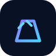
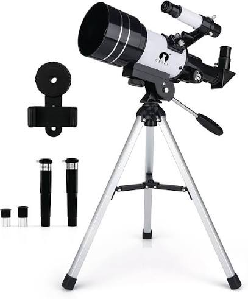
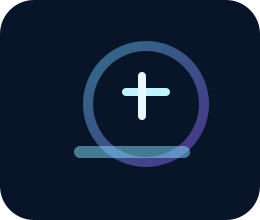
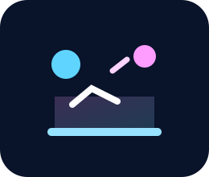

Refractor Telescopes
Sharp planetary views in a compact, easy-to-use design for beginners and pros alike.
Learn MoreDiscover premium telescopes, astronomy accessories, and stargazing equipment designed for beginners, enthusiasts, and professional astronomers.
Integrated with Pipedrive CRM for seamless lead management, faster follow-up, and smarter customer support.
The GalexgyViewer helps people discover the wonders of the universe through high-quality telescopes and astronomy accessories. Whether you’re observing planets, deep-sky objects, or introducing children to astronomy, we provide reliable equipment and expert guidance.
Our platform is fully connected to Pipedrive CRM, so every inquiry is tracked, nurtured, and responded to with precision.
Sharp planetary views in a compact, easy-to-use design for beginners and pros alike.
Learn More
Deep-sky observations with powerful light-gathering performance and precision tracking.
Learn MoreAutomated object locating and one-click alignment for seamless night-sky exploration.
Learn MoreCapture nebulae, galaxies, and planets with cameras, mounts, and guiding tools.
Learn MorePortable optics for backyard stargazing, sunrise observations, and quick sky surveys.
Learn MoreMounts, tripods, cases, and adapters designed to optimize every observing session.
Learn MorePrecision optics and color filters that enhance contrast for lunar, planetary, and deep-sky views.
Learn MoreHands-on science kits and guides tailored to inspire the next generation of sky explorers.
Learn More
Classic refractor design for crisp lunar and planetary observations.
.jpeg)
High-performance reflector for deep-sky targets and wide-field viewing.
.jpeg)
Designed for astrophotography and long-exposure night sky captures.
.jpeg)
Perfect for families and beginners starting their first astronomy journey.
.jpeg)
Built for serious stargazers who want precision and versatility.
.jpeg)
Portable telescope system with vivid views and easy transport.
Only curated optics and mounts that meet professional performance and durability standards.
Personalized recommendations that match your skill level, budget, and observing goals.
Reliable delivery so your gear arrives quickly and is ready for the next clear night.
Resource guides and setup help that make astronomy accessible for every age.
Highly-rated reviews from backyard astronomers, clubs, and educational programs.
Value-driven packages that bring premium optics within reach of every budget.
Crystal-clear planetary views, lightweight portability, and beginner-friendly setup.
High-contrast reflector with upgraded mount ideal for galaxies and nebulae.

Everything you need to begin astrophotography with reliable tracking and optics.

Interactive learning tools and a telescope kit built for young space explorers.
“My first telescope felt intimidating, but GalexgyViewer made it easy. The optics are stunning and the support team helped me find the perfect model.”
“The astrophotography gear arrived beautifully packaged and performed even better than expected. Night after night, the images are sharp and inspiring.”
“The educational kit was a huge hit with my kids. We’re exploring the moon, planets, and constellations together with an easy-to-follow guide.”
Start your first observation session with a curated checklist and night sky tips.
Compare refractors, reflectors, and computerized models to choose the right scope.
Learn how to find Jupiter, Saturn, and Mars with precision and clarity.
Discover the fundamentals of capturing memorable night sky images.
Have questions about telescopes or need help choosing the right astronomy setup? Our team is available to guide you through every step.